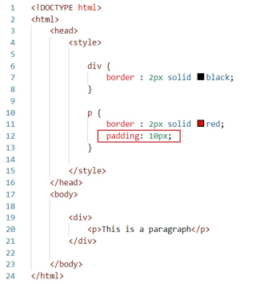

The area between the content and the red line is the padding for the p
tag.
The "padding" property is used to change the padding.
This is a paragraph.
For padding, we also have properties like "padding-top", "padding-bottom",
"padding-right", and "padding-left". Morever, the "padding" property is
also a shorthand property like the "margin" property.